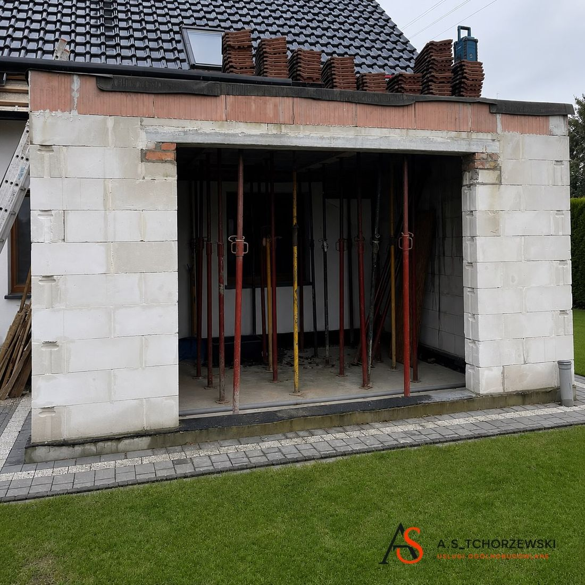
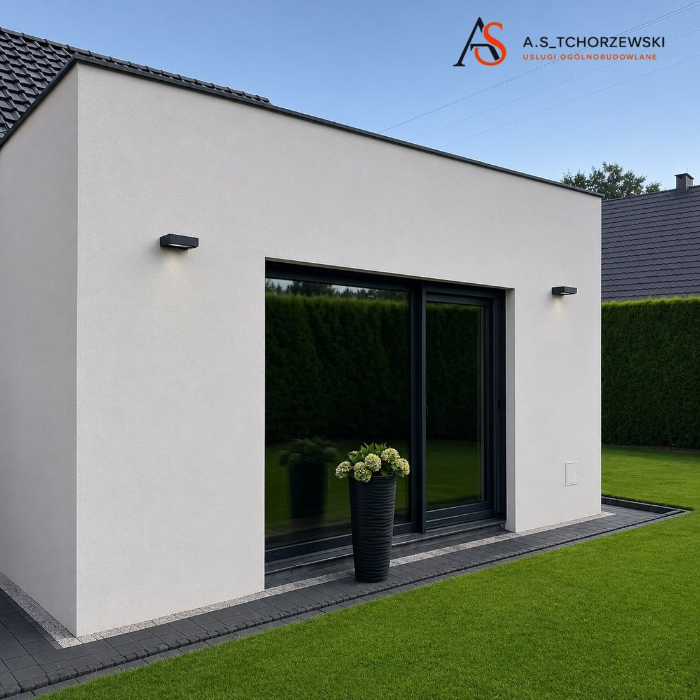
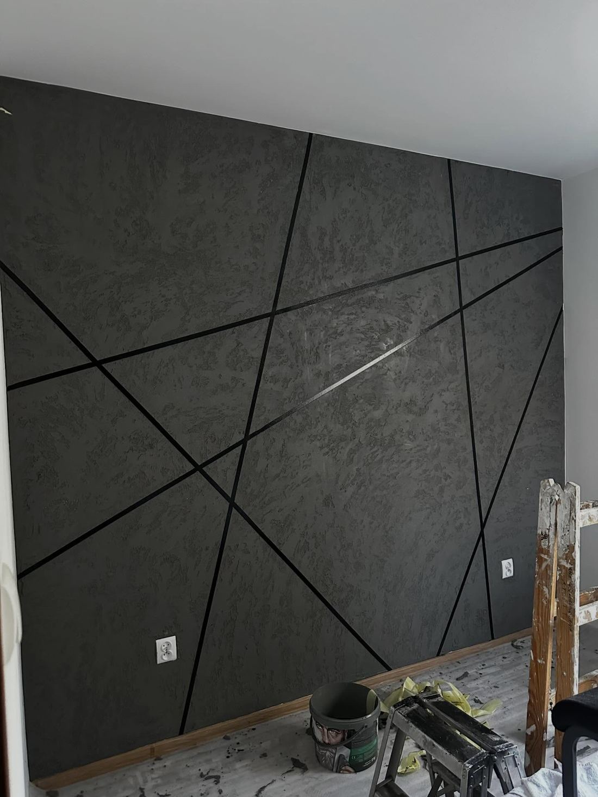
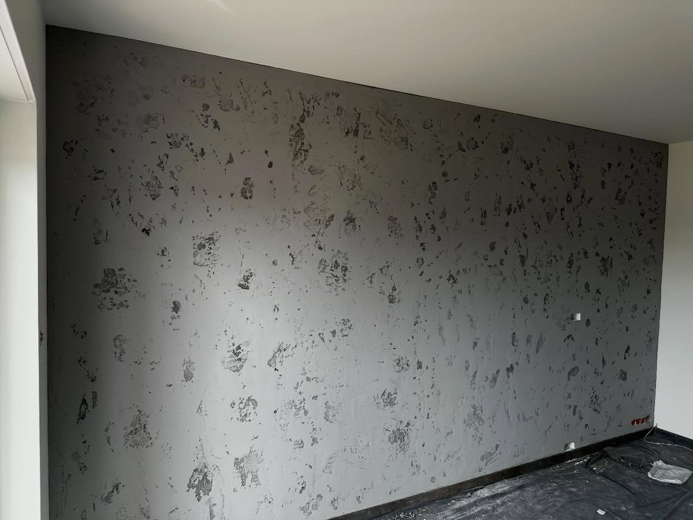
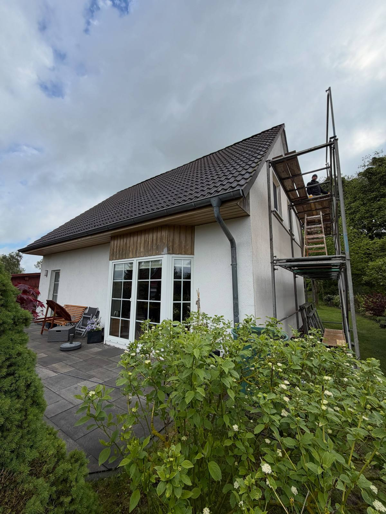
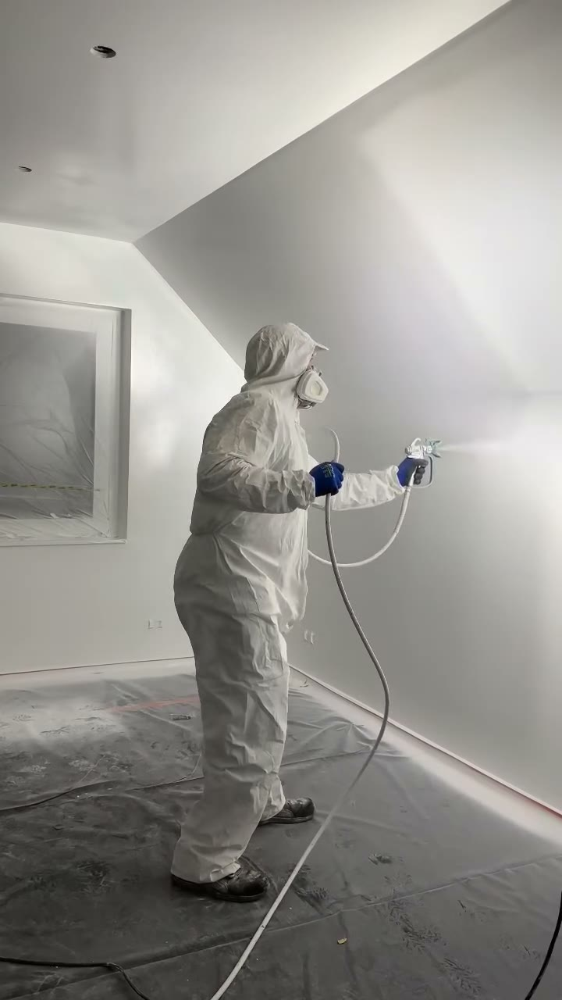
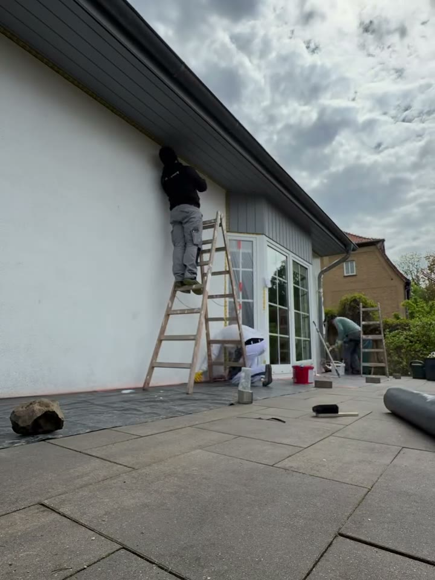

Wszystkie zdjęcia na tej stronie są z naszych budów. Część kadrów jest „w trakcie” i tak je podpisujemy - pokazują to, czego na gotowym zdjęciu już nie widać.










Oba filmy są bez dźwięku i ruszają dopiero po kliknięciu - nie zjadają transferu na telefonie.


Zadzwoń albo napisz na WhatsAppie - umawiamy oględziny i wracamy z wyceną do 5 dni roboczych.